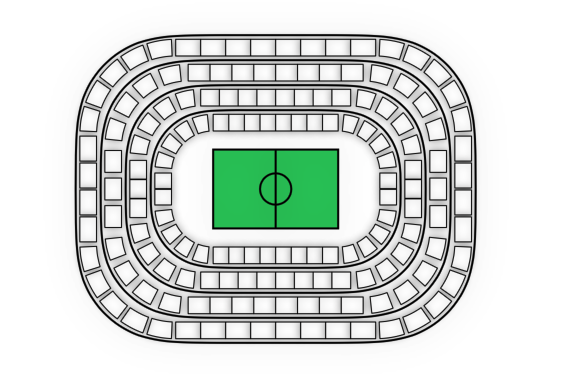
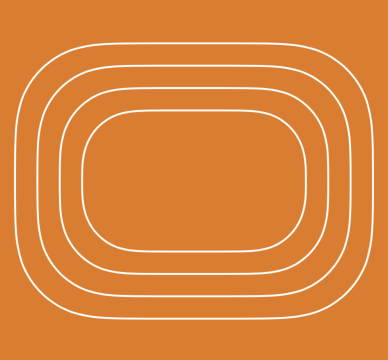
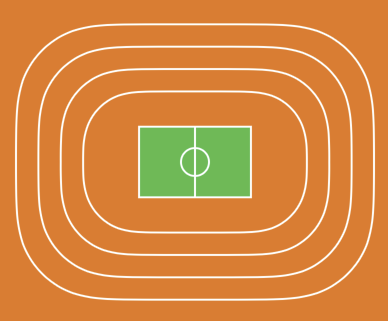
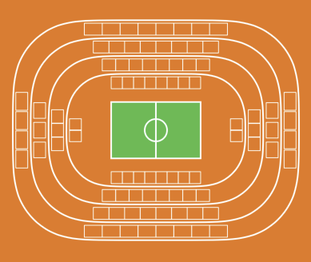
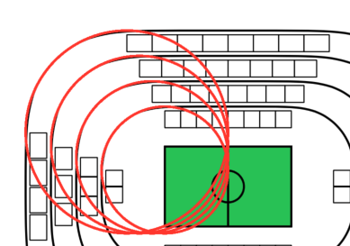
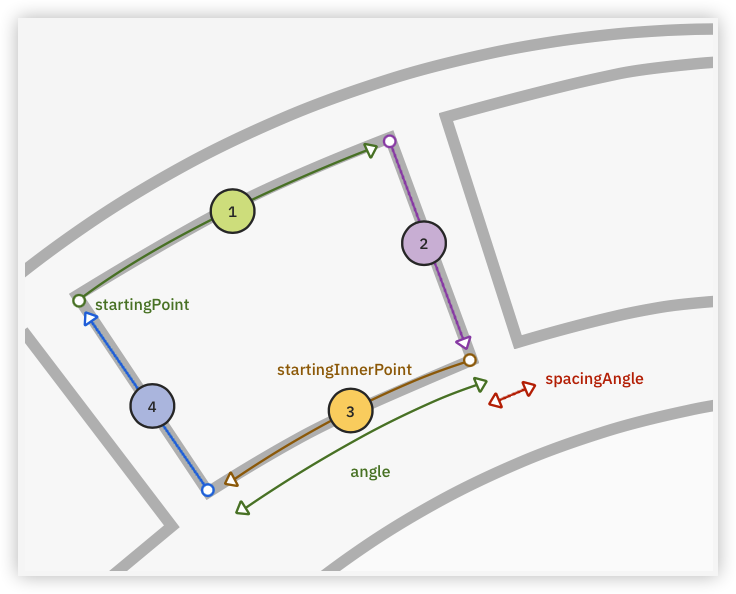
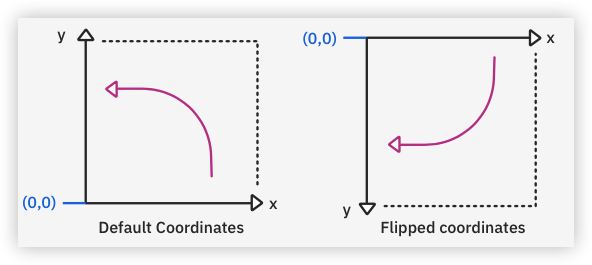
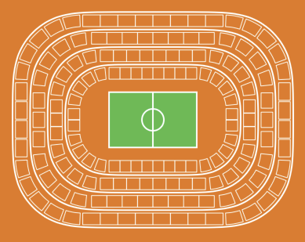
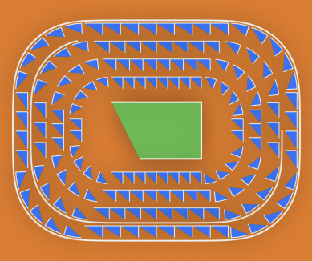
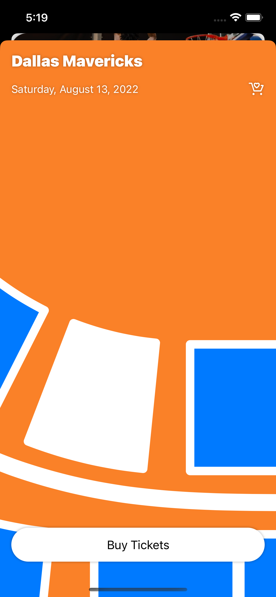

4 Drawing Custom Components¶
In the previous chapters, you got to use existing SwiftUI controls, like Image, Buttonor various stacks, to build an animated component. In many cases, if not the majority, they’re sufficient to make an app engaging and valuable. But what about a non-trivial view requiring more intricate user interaction?
Avid basketball fans often have specific preferences regarding their seating. It’s not enough to choose how many tickets they need for a game and have their credit card charged. They also want to choose where their seats are.
In this chapter, you’ll build an interactive animated seating chart that lets users select their favorite seats quickly and conveniently. Considering the complexity of the shapes and their composition, drawing the various shapes from scratch is the way to go.
By the end of this chapter, your seating chart will look like this:

Outlining the Seating Chart View Using a Path¶
The seating chart you’ll implement consists of a few key components: the field, which is that green rectangle in the middle, the sectors and the tribunes. You’ll need to build two kinds of tribunes: rectangular ones located along a straight line and those placed in the corner areas of the stadium. You’ll position corner tribunes along an arc, so you’ll brush up on your trigonometry. :]
Note
Some of the parts related to drawing and positioning the various stadium parts are a bit math-heavy, but no worries - we’ve got you covered! You can simply follow along the provided code snippets, or compare your code against the final project of this project’s materials.
Open the starter project in this chapter’s materials, or start working from the end of the previous chapter.
Start by creating a new SwiftUI view file that will contain all the above sub-components and name it SeatingChartView.swift. For now, place a ZStack in the body of the generated struct:
ZStack {
}
Immediately below SeatingChartView, create a new struct named Stadium and conform it to the Shape protocol:
struct Stadium: Shape {
func path(in rect: CGRect) -> Path {
}
}
In SwiftUI, Shape is a 2-dimensional drawn view, which can have a stroke and a fill. To implement a shape, you must create and manipulate a Path instance in the path(in:) method and return the result.
Drawing the Sectors¶
In this section, you’ll create the sectors, which are the elliptical lines that separate the tribunes. When you’re done, the seating chart will look like this:

First, you’ll declare the number of sectors your stadium contains. Add a new constant to your Constants.swift file:
static let stadiumSectorsCount = 4
To calculate sectors’ frames based on the size of the stadium, add the following lines inside Stadium’s path(in:):
// 1
Path { path in
let width = rect.width
let widthToHeightRatio = 1.3 // 2
let sectorDiff = width / (CGFloat(Constants.stadiumSectorsCount * 2)) // 3
}
Here’s a code breakdown:
- You initialize a new
Pathusing a special initializer which hands you apathargument you can manipulate and draw the chart’s main outlines onto. - To make the stadium appear elliptical, you need a width-to-height ratio different from
1.0. - Since the sectors are different sizes, you need to calculate the size change value, vertically and horizontally, between the neighboring sectors.
Now, add a loop under the variables you just added to calculate frames for each sector, and draw a rounded rectangle for each:
(0..<Constants.stadiumSectorsCount).forEach { i in
let sectionWidth = width - sectorDiff * Double(i) // 1
let sectionHeight = width / widthToHeightRatio - sectorDiff * Double(i) // 2
let offsetX = (width - sectionWidth) / 2.0 // 3
let offsetY = (width - sectionHeight) / 2.0
let sectorRect = CGRect(
x: offsetX, y: offsetY,
width: sectionWidth, height: sectionHeight
)
path.addRoundedRect(
in: sectorRect,
cornerSize: CGSize(
width: sectorRect.width / 4.0,
height: sectorRect.width / 4.0
), // 4
style: .continuous
)
}
Here’s a code breakdown:
- Because a rectangle is defined by its origin (
x,y) and size (width,height), you calculate those values based on the stadium’s size, making sure to deduct a value of thesectorDiffeach time to get the width of the next smaller sector. - In addition to the difference between the sectors, you must account for the width-to-height ratio to calculate the sector’s height.
- To calculate the offset of a sector’s origin, you calculate the difference between the available width (or height) and the section width. You then divide it by two.
- You draw a rounded rectangle into the
pathwith corners a quarter of the sector’s width.
To get the first preview of your component, add an instance of Stadium inside the ZStack in SeatingChartView:
Stadium()
.stroke(.white, lineWidth: 2)
Now, open SeatsSelectionView and replace Text(Something is missing here!)with the SeatingChartView you just created:
SeatingChartView()
.aspectRatio(1.0, contentMode: .fit)
.padding()
You set the aspect ratio to 1 to give the view a squared area to draw the stadium.
Finally, back in SeatingChartView.swift, update your preview so it has a nice orange background which lets you see the white sectors:
struct SeatingChartView_Previews: PreviewProvider {
static var previews: some View {
SeatingChartView()
.padding()
.background(orange)
}
}
Your SwiftUI preview should look like the screenshot in the beginning of this section.
Drawing the Field¶
In this section, you’ll draw the field in the middle of the stadium. When you’re done, it will look like this:

To animate the stadium field separately from the other components and fill it with a different color, you need to draw it separately.
Create a @State property field inside SeatingChartView:
@State private var field = CGRect.zero
Then, in the same file, add a @Binding variable of the same type in Stadium shape:
@Binding var field: CGRect
Pass it from SeatingChartView to Stadium’s initializer:
Stadium(field: $field)
To draw the field inside the smallest sector frame, add a new variable above the loop in Stadium:
var smallestSectorFrame = CGRect.zero
Once you calculate the rectangle for a sector inside the loop, assign it to the new variable. This will guarantee that when the loop finishes, the smallest sector Rectstores inside this variable. Add this below let sectorRect = ...:
smallestSectorFrame = sectorRect
The field needs to be half the size of the smallest sector. You’ll calculate the exact field Rect with the help of some simple math.
Below the path(in:) method of Stadium, add a new method to calculate and update the field property:
private func computeField(in rect: CGRect) {
Task {
field = CGRect(
x: rect.minX + rect.width * 0.25,
y: rect.minY + rect.height * 0.25,
width: rect.width * 0.5,
height: rect.height * 0.5
)
}
}
Now, back in path(in:) and after the forEach, run computeField to assign the result of the computation to field :
computeField(in: smallestSectorFrame)
With these preparations in place, you’re ready to draw the field. Below Stadium, add a new shape to describe the field:
struct Field: Shape {
func path(in rect: CGRect) -> Path {
}
}
Inside path(in:), add the following manipulations:
Path { path in
path.addRect(rect) // 1
path.move(to: CGPoint(x: rect.midX, y: rect.minY)) // 2
path.addLine(to: CGPoint(x: rect.midX, y: rect.maxY)) // 3
path.move(to: CGPoint(x: rect.midX, y: rect.midX))
path.addEllipse(in: CGRect( // 4
x: rect.midX - rect.width / 8.0,
y: rect.midY - rect.width / 8.0,
width: rect.width / 4.0,
height: rect.width / 4.0)
)
}
Here’s what you draw above:
- First, you outline the rectangle of the field.
- Then, you move the path to the top center of the rectangle.
- You draw the line from there toward the bottom center to split the field in half.
- From the center of the field, you draw a circle with a diameter of a quarter of the field’s width.
Go back to SeatingChartView and on top of Stadium inside the ZStack, add:
Field().path(in: field).fill(.green)
Field().path(in: field).stroke(.white, lineWidth: 2)
Right now, a path can either have a stroke or a fill. To have both, you need to duplicate them. Run the app or check the preview to see how the field you just created looks.
Computing the Positions of the Rectangular Tribunes¶
Similar to the field, you’ll draw the tribunes separately to ease the animation. When you’re done, it’ll look like this:

Create a new struct at the bottom of SeatingChartView.swift, which will represent both types of tribunes:
struct Tribune: Hashable, Equatable {
var path: Path
public func hash(into hasher: inout Hasher) {
hasher.combine(path.description)
}
}
Additionally, you’ll need a Shape to draw the rectangular tribunes:
struct RectTribune: Shape {
func path(in rect: CGRect) -> Path {
Path { path in
path.addRect(rect)
path.closeSubpath()
}
}
}
Now, create a new property inside SeatingChartView to make it aware when the calculations of the tribunes are complete:
@State private var tribunes: [Int: [Tribune]] = [:]
You’ll keep the tribunes as a dictionary of sector indices and the tribunes belonging to it.
Create the @Binding variable to mirror this state in Stadium:
@Binding var tribunes: [Int: [Tribune]]
Don’t forget to pass it from SeatingChartView:
Stadium(field: $field, tribunes: $tribunes
.stroke(.white, lineWidth: 2)
Then, to split the sectors-related computations from the general outline, create a new Shape for a sector:
struct Sector: Shape {
@Binding var tribunes: [Int: [Tribune]] // 1
var index: Int
var tribuneSize: CGSize // 2
var offset: CGFloat
func path(in rect: CGRect) -> Path {
Path { path in
let corner = rect.width / 4.0
path.addRoundedRect( // 3
in: rect,
cornerSize: CGSize(width: corner, height: corner),
style: .continuous
)
}
}
}
Here’s what happens in the code above:
- To update the
tribunesvalue once you finish the computations, you create a@BindinginSector, which you’ll pass fromStadium. Sectorneeds a few values to position the tribunes. Specifically, their size and the offset from the bounds of the current sector.- You move the drawing of the rounded rectangle from
StadiumtoSector.
Now, go back to Stadium’s path(in:) and add the following variable above the loop:
let tribuneSize = CGSize(
width: sectorDiff / 3,
height: sectorDiff / 4.5
)
Based on the difference between the sector sizes, you need to decide on the height of a tribune. You divide the diff value by three to account for the vertical measurements of two rows of tribunes, top and bottom, and the top and bottom spacings for both of a quarter of a tribune’s height: two tribunes + spacings of 0.25.
For the width, you’ll use a ratio of 1:1.5, meaning fifty percent bigger than its height.
Then, replace the drawing of the rounded rectangle with the Sector shape you just created. Replace path.addRoundedRect(...) with:
let tribuneSize.widthOffset = (tribuneSize.width / CGFloat(Constants.stadiumSectorsCount * 2)) * Double(i) // 1
path.addPath(Sector(
tribunes: $tribunes,
index: i,
tribuneSize: CGSize(
width: tribuneSize.width - tribuneSize.widthOffset,
height: tribuneSize.height
),
offset: (sec
Here’s a breakdown:
- Normally, the tribunes closer to the field are smaller than those on the borders. Therefore, depending on the index of the current sector, you deduct a part of the tribune width.
- You divide the difference between the
sectorDiffand the tribune’s height in half to have equal top and bottom spacings for the tribune.
Now, to the tribunes. Create a new method inside the Sector struct:
private func computeRectTribunesPaths(at rect: CGRect, corner: CGFloat) -> [Tribune] {
}
Since you place the rectangular tribunes only along a sector’s straight segments, horizontal and vertical, you need to keep track of the width and height of such a segment.
Add them inside the method:
let segmentWidth = rect.width - corner * 2.0
let segmentHeight = rect.height - corner * 2.0
Then you need to know how many tribunes would fit horizontally or vertically:
let tribunesHorizontalCount = segmentWidth / tribuneSize.width
let tribunesVerticalCount = segmentHeight / tribuneSize.width
Notice that you divide the value in both cases by tribuneSize.width. In the sector’s vertical segments, the tribunes rotate by 90 degrees, so you still need to operate with the width to know how many would fit vertically.
Define the spacings:
let spacingH = (segmentWidth - tribuneSize.width * tribunesHorizontalCount) / tribunesHorizontalCount
let spacingV = (segmentHeight - tribuneSize.width * tribunesVerticalCount) / tribunesVerticalCount
Finally, before computing each tribune, you need to add a helper function to create a Tribune instance out of a RectTribune. Add it right below computeRectTribunesPaths(at:corner:):
private func makeRectTribuneAt(x: CGFloat, y: CGFloat, rotated: Bool = false) -> Tribune {
Tribune(
path: RectTribune().path(
in: CGRect( // 1
x: x,
y: y,
width: rotated ? tribuneSize.height : tribuneSize.width, // 2
height: rotated ? tribuneSize.width : tribuneSize.height
)
)
)
}
Here’s what you just added:
- You create an instance of
Tribuneand pass the path ofRectTribune. - Depending on whether the tribune is rotated, you swap the width and height when building a
CGRect.
Go back to computeRectTribunesPaths(at:corner:) and add the following code to compute the horizontal tribunes:
var tribunes = [Tribune]()
(0..<Int(tribunesHorizontalCount)).forEach { i in // 1
let x = rect.minX + (tribuneSize.width + spacingH) * CGFloat(i) + corner + spacingH / 2 // 2
tribunes.append(makeRectTribuneAt(x: x, y: rect.minY + offset)) // 3
tribunes.append(makeRectTribuneAt(x: x, y: rect.maxY - offset - tribuneSize.height)) // 4
}
Here’s what you did:
- You iterate over each tribune in a loop.
- The
xvalue for the top and bottom horizontal tribune is the same, so you calculate it beforehand, each time moving from left to right, by the width of the tribune and the horizontal spacing. - You add the top tribune. To offset it vertically, you add the value of the offset to the
minYof the rectangle. - You place the bottom tribune by offsetting it from the bottom border of the rectangle. Since the origin of a
CGRectrefers to its top left corner, you must also deduct the tribune’s height.
Now, calculate the positions for the vertical tribunes and return the result:
(0..<Int(tribunesVerticalCount)).forEach { i in
let y = rect.minY + (tribuneSize.width + spacingV) * CGFloat(i) + corner + spacingV / 2 // 1
tribunes.append(makeRectTribuneAt(x: rect.minX + offset, y: y, rotated: true)) // 2
tribunes.append(makeRectTribuneAt(x: rect.maxX - offset - tribuneSize.height, y: y, rotated: true)) // 3
}
return tribunes
Here’s a code breakdown:
- The
yvalue is equal for the left and right vertical pair of tribunes. In this case, you move from top to bottom, starting fromminY. - You add the left tribune by offsetting it from the rectangle’s
minX. You passtrueas arotatedargument because the tribune is vertical. - You calculate the right tribune’s position similar to the bottom horizontal one. You deduct the height value and offset from the
maxX.
Now, assign the calculated result to the tribunes variable in the path(in:) method of Sector below the line drawing the rounded rectangle:
guard !tribunes.keys.contains(where: { $0 == index }) else { // 1
return
}
Task {
tribunes[index] = computeRectTribunesPaths(at: rect, corner: corner) // 2
}
Here’s what you did:
- Since you want to calculate the tribunes’ positions only once to improve the performance, you check whether the dictionary already contains them. They’re not moving once installed, right? :]
- You assign the calculated rectangular tribunes to the
tribunesvariable.
Finally, draw the tribunes in the SeatingChartView’s body right below Stadium:
ForEach(tribunes.flatMap(\.value), id: \.self) { tribune in
tribune.path
.stroke(.white, style: StrokeStyle(lineWidth: 1, lineJoin: .round))
}
Whew, that was a lot! But if you check out your preview, you’ll see you’ve made some amazing progress. So close!

Applying Trigonometry to Position Views Along an Arc¶
To align the tribunes along an arc, you need to know some of the properties of the circlethis arc belongs to.

Look at the sectors you drew, and you’ll notice that the corners are lying precisely on a circle with a radius the size of the corner of the rounded rectangle and the center in (minX + corner, minY + corner) for the top left corner. This information is sufficient to make further computations.
Create a new function below computeRectTribunesPaths(at:corner:):
private func computeArcTribunesPaths(at rect: CGRect, corner: CGFloat) -> [Tribune] {
}
As you build an arc tribune, you need to outline the arcs of two circles, one bigger and one smaller, and then connect them with straight lines.

To calculate the radiuses of these circles, start by adding these variables inside the method:
let radius = corner - offset
let innerRadius = corner - offset - tribuneSize.height
Then, you’ll need to calculate how many tribunes would fit into the arc. First, you obtain the length of the arc:
let arcLength = (.pi / 2) * radius // 1
let arcTribunesCount = Int(arcLength / (tribuneSize.width * 1.2)) // 2
Here’s a code breakdown:
- To calculate the arc length, you need to multiply the center angle in radians by the radius.
- Then, you divide the length by the width of the tribune and an additional twenty percent of it to account for the spacings between the tribunes.
Now, you can calculate the angle of an arc needed for each tribune and an angle for the spacing. When moving along an arc, it’s easier to operate with angles than sizes:
let arcSpacing = (arcLength - tribuneSize.width * CGFloat(arcTribunesCount)) / CGFloat(arcTribunesCount + 1) // 1
let angle = tribuneSize.width / radius // 2
let spacingAngle = arcSpacing / radius // 3
In the code above, you:
- Calculate the total spacing length.
- To calculate the angle for a tribune, divide the tribune’s width by the radius.
- The same goes for the angle for the spacings.
Note
The coordinate system in computer graphics is flipped, so the y-axis increases its value downwards instead of upwards. So, “clockwise” and “counterclockwise” appear opposite on the screen. The same applies to the positive direction for the trigonometric (unit) circle: an angle value still increases “counterclockwise” but in terms of the flipped coordinate system. From here onward, all the directions and angles will imply this system.

Now, you need to define an arc’s starting angles and a circle’s center for each corner of the sector. Make a dictionary to track them:
let arcs: [CGFloat: CGPoint] = [
.pi: CGPoint(x: rect.minX + corner, y: rect.minY + corner), // 1
3 * .pi / 2: CGPoint(x: rect.maxX - corner, y: rect.minY + corner), // 2
2 * .pi: CGPoint(x: rect.maxX - corner, y: rect.maxY - corner), // 3
5 * .pi / 2: CGPoint(x: rect.minX + corner, y: rect.maxY - corner) // 4
]
Here’s a code breakdown:
- You start from the top left corner of the sector. Its arc will go from
.pito3 * .pi / 2. - The top right sector’s arc starts at
3 * .pi / 2and ends at2 * .pi. - The bottom right sector continues from
2 * .piuntil5 * .pi / 2. - Finally, the bottom left sector starts at
5 * .pi / 2.
Now, you need to iterate over the dictionary and compute the arcTribunesCountamount of tribunes for each corner of the current sector. Add the following lines below the dictionary:
return arcs.reduce(into: [Tribune]()) { tribunes, arc in
var previousAngle = arc.key
let center = arc.value
let arcTribunes = (0..<arcTribunesCount).map { _ in
return Tribune(path: .init())
}
tribunes.append(contentsOf: arcTribunes)
}
You’ll calculate the outer arc’s starting point and the inner ones for each tribune. Add these calculations at the top of the inner map:
let startingPoint = CGPoint(
x: center.x + radius * cos(previousAngle + spacingAngle),
y: center.y + radius * sin(previousAngle + spacingAngle)
)
let startingInnerPoint = CGPoint(
x: center.x + innerRadius * cos(previousAngle + spacingAngle + angle),
y: center.y + innerRadius * sin(previousAngle + spacingAngle + angle)
)
To calculate the x-coordinate of a point on a circle, you need to use the following formula:
x = x0 + r * cos(t), where x0 is the x-coordinate of the circle’s center, and t is the angle at the origin.
The formula for the y-coordinate is similar:
y = y0 + r * sin(t)
The startingPoint is the point from which you’ll draw the outer arc counterclockwise. Then, you’ll draw a straight line toward the startingInnerPoint. From there, draw an arc clockwise, then connect it to the startingPoint with a straight line again.
To implement this sequence, create a new shape at the bottom of SeatingChart.swift, ArcTribune, containing all the needed parameters:
struct ArcTribune: Shape {
var center: CGPoint
var radius: CGFloat
var innerRadius: CGFloat
var startingPoint: CGPoint
var startingInnerPoint: CGPoint
var startAngle: CGFloat
var endAngle: CGFloat
func path(in rect: CGRect) -> Path {
}
}
To implement the idea mentioned above, inside path(in:), add:
Path { path in
path.move(to: startingPoint)
path.addArc(
center: center,
radius: radius,
startAngle: .radians(startAngle),
endAngle: .radians(endAngle),
clockwise: false
)
path.addLine(to: startingInnerPoint)
path.addArc(
center: center,
radius: innerRadius,
startAngle: .radians(endAngle),
endAngle: .radians(startAngle),
clockwise: true
)
path.closeSubpath()
}
Go back to the map in computeArcTribunesPaths(at:corner:) and replace the return statement with:
let tribune = Tribune(
path: ArcTribune(
center: center,
radius: radius,
innerRadius: innerRadius,
startingPoint: startingPoint,
startingInnerPoint: startingInnerPoint,
startAngle: previousAngle + spacingAngle,
endAngle: previousAngle + spacingAngle + angle
)
.path(in: CGRect.zero)
)
previousAngle += spacingAngle + angle
return tribune
With this code, you add a new arc tribune on each iteration and continue moving counterclockwise. Add a new method in Sector to calculate both types of tribunes for the sector:
private func computeTribunes(at rect: CGRect, with corner: CGFloat) -> [Tribune] {
computeRectTribunesPaths(at: rect, corner: corner) +
computeArcTribunesPaths(at: rect, corner: corner)
}
Finally, replace the closure of the Task in path(in:) of Sector with:
tribunes[index] = computeTribunes(at: rect, with: corner)
The most complicated part is over! You only need to add some bells and whistles to make the seating chart view shine. But for now, run the app!

Animating Path Trimming¶
The Shape struct offers a method called trim(from:to:), which lets you define a range of the path SwiftUI will draw, cutting the other parts out. You can create a beautiful animated effect by animating the values passed to the method.
Create a new property inside SeatingChartView:
@State private var percentage: CGFloat = 0.0
Then, add .onChange on the ZStack element:
.onChange(of: tribunes) {
guard $0.keys.count == Constants.stadiumSectorsCount else { return } // 1
withAnimation(.easeInOut(duration: 1.0)) {
percentage = 1.0 // 2
}
}
Here’s a breakdown:
- You check whether the data is complete every time the
tribunescount changes, for example, when you append a sector’s tribunes. - If all the tribunes are ready, you trigger an animation.
Finally, you’ll apply .trim(from:to:) to each shape you want to animate. In SeatingChartView’s body, add the following line to both Field shapes, Stadiumand tribune inside the loop before applying a stroke or a fill:
.trim(from: 0.0, to: percentage)
Every time the view appears on the screen, SwiftUI will animate the chart.
To give it a final touch, add background to the tribune inside the loop, below the .stroke modifier:
.background(
tribune.path
.trim(from: 0.0, to: percentage)
.fill(.blue)
)
Time to check out the result, run the app and see for yourself! ;]

Basic Interaction With Path Objects¶
In the next chapter, you’ll draw seats for each tribune and implement more complex gesture handling to ease the user’s navigation. To prepare, you first must make it possible for a user to select a tribune.
Add a few new properties to SeatingChartView:
@State private var selectedTribune: Tribune? = nil
@State private var zoom = 1.25
@State private var zoomAnchor = UnitPoint.center
Once the user selects a tribune, you’ll zoom the chart with the chosen tribune as an anchor.
To do this, add a scaleEffect(:anchor:) modifier to the ZStack. Additionally, rotate the seating chart to make it bigger and easier to interact with:
.rotationEffect(.radians(.pi / 2))
.coordinateSpace(name: "stadium")
.scaleEffect(zoom, anchor: zoomAnchor)
Since every view defines its own coordinate system, the touch gestures have coordinates in the context of the view where the gesture occurred. In the current case, you want to receive touch events from each specific tribune but apply the zoom anchor toward a bigger container. You need to operate in the same coordinate space to make it possible.
The anchor of a scale effect is defined by its UnitPoint. Its x and y values lay in the range of [0…1]. For example, the .center UnitPoint is (x: 0.5, y: 0.5). This way, to translate normal coordinates into a UnitPoint, you need to divide them by the width and height of the coordinate space’s owner, ZStack. To obtain its size, you need to wrap the ZStack in a GeometryReader and fetch the value from its proxy:
var body: some View {
GeometryReader { proxy in
ZStack { ... }
}
}
Now, go to the ForEach in SeatingChartView iterating the tribunes and add an .onTapGesture modifier below .background:
.onTapGesture(coordinateSpace: .named("stadium")) { tap in // 1
let unselected = selectedTribune == tribune // 2
withAnimation(.easeInOut(duration: 1)) {
selectedTribune = unselected ? nil : tribune // 3
zoomAnchor = unselected
? .center
: UnitPoint(
x: tap.x / proxy.size.width,
y: tap.y / proxy.size.height
) // 4
zoom = unselected ? 1.25 : 12.0 // 5
}
}
Here’s a step-by-step explanation of the code:
- First, you define the coordinate space in the context in which you want to receive a touch event’s coordinates. You use the same name you used for the
ZStack. - If
selectedTribuneequals the current tribune, a user unselected the tribune. - Inside
withAnimation, you assign the tribune toselectedTribune. - You create an instance of
UnitPoint, pass the translated values to its initializer and assign it tozoomAnchorif the user selects a tribune. - Finally, if the user selects a tribune, you increase the scale effect. Otherwise, you decrease to the normal value and shift the zoom anchor toward the center of
ZStack.
Last but not least, to indicate that a tribune is selected, update its background fill. Replace .fill(.blue) with:
.fill(selectedTribune == tribune ? .white : .blue)
Run the app:

Linking Animations¶
Right now, the selected tribune goes out of sight for a moment when zooming in, which can feel somewhat confusing for a user. It would make sense to shift the anchor and zoom the selected tribune so that a user doesn’t feel lost while the animation is ongoing. When the tribune is deselected, the opposite would work better - zoom out, then shift the anchor.
There are a few ways to chain the animations in SwiftUI, but no direct method. To implement this API yourself, create a new Swift file named LinkedAnimation and add:
import SwiftUI
struct LinkedAnimation { // 1
let type: Animation
let duration: Double
let action: () -> Void
static func easeInOut(for duration: Double,
action: @escaping () -> Void) -> LinkedAnimation {
return LinkedAnimation(type: .easeInOut(duration: duration),
duration: duration,
action: action) // 2
}
}
Here’s a breakdown:
- First, you create a struct representing an
Animation, which would be linkable to another animation. It has a type, such aseaseInorlinear, duration and closure to execute. - You create a helper function to quickly initialize the most commonly used
easeInOuttype of linkable animation.
Now, add the link method to LinkedAnimation:
func link(to animation: LinkedAnimation, reverse: Bool) {
withAnimation(reverse ? animation.type : type) {
reverse ? animation.action() : action() // 1
}
withAnimation(reverse ? type.delay(animation.duration) :
animation.type.delay(duration)) { // 2
reverse ? action() : animation.action()
}
}
Here you create an easy-to-use method that lets you link two animations in regular or reverse order:
- In case of the reverse order, you start with the second animation, pass it to the
withAnimationand execute its action inside the closure. - Right after, you execute the next animation but delay it for the duration of the previous one.
Back in SeatingChartView, replace the code inside .onTapGesture:
let unselected = tribune == selectedTribune
let anchor = UnitPoint(
x: tap.x / proxy.size.width,
y: tap.y / proxy.size.height
)
LinkedAnimation
.easeInOut(for: 0.7) { zoom = unselected ? 1.25 : 12 }
.link(
to: .easeInOut(for: 0.3) {
selectedTribune = unselected ? nil : tribune
zoomAnchor = unselected ? .center : anchor
},
reverse: !unselected
)
With this code, you alternate the order of the zooming and anchor animations depending on whether a user selected a tribune.
Run your app one more time, select and deselect some seats, and give yourself a hard-earned pat on the back for some incredible work. Well done!
Key Points¶
- To create a custom
Shape, you need to create a struct conforming to the protocol and implementpath(in:), which expects you to return the shape’s path. - Apple uses a flipped coordinate system, which results in a flipped unit circle: angle value increases downward from the positive x-axis direction.
- Use
trim(from:to:)to animate the stroke or fill of aShapeinstance. UnitPointrepresents an anchor in SwiftUI, its x- and y-values are in the range of 0.0 and 1.0. To convert those values to their normal, you must divide them by a view’s width and height, respectively.- To ease the use of the coordinates across different views, you can define a common coordinate space for them, using
.coordinateSpace(name:)together with.onTapGesture(count:coordinateSpace:perform).